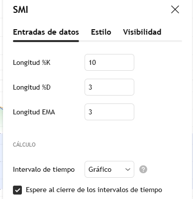
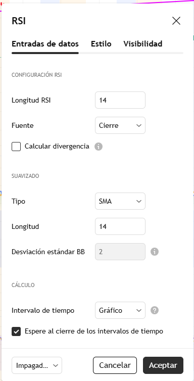
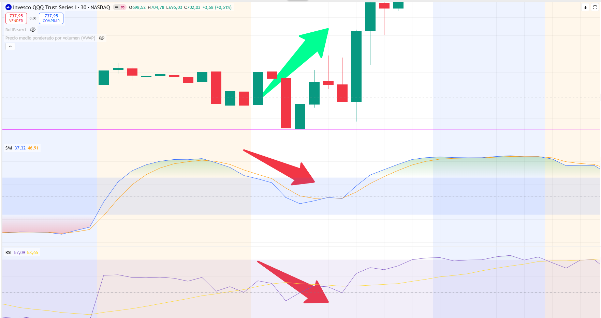
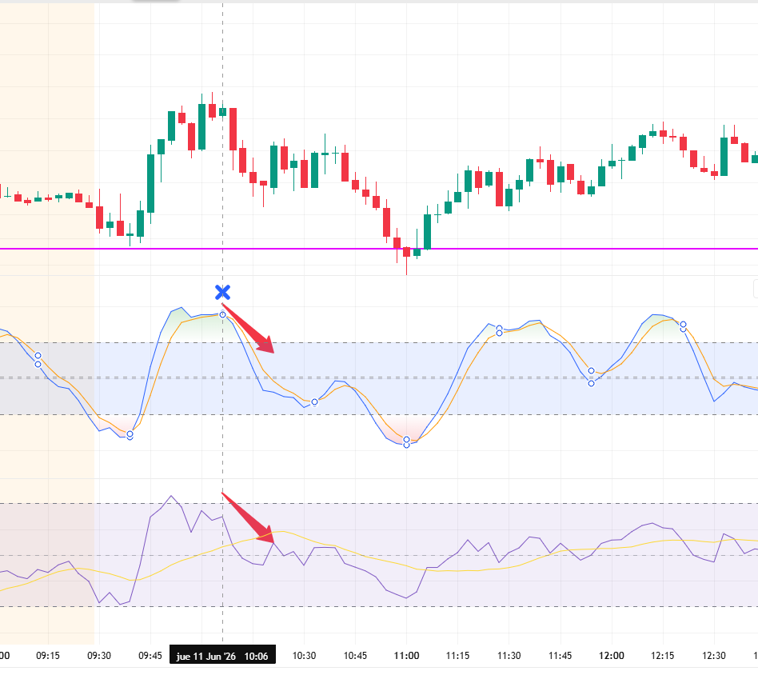
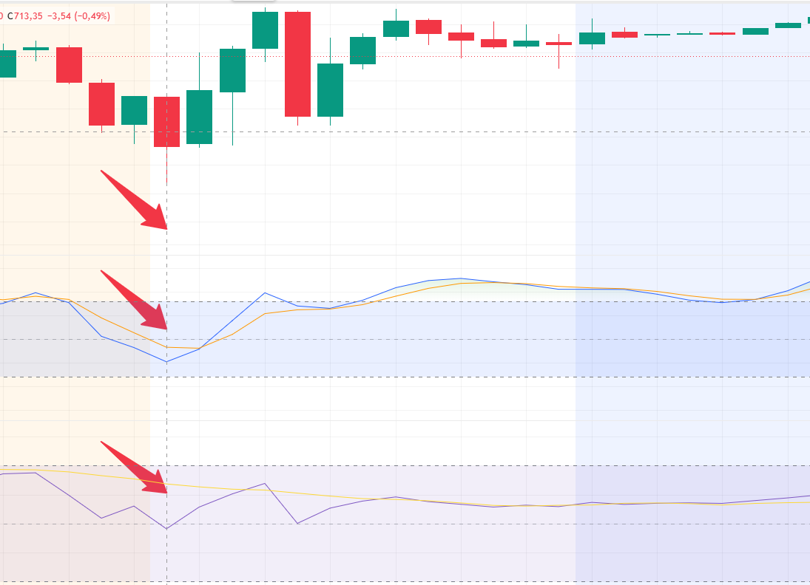
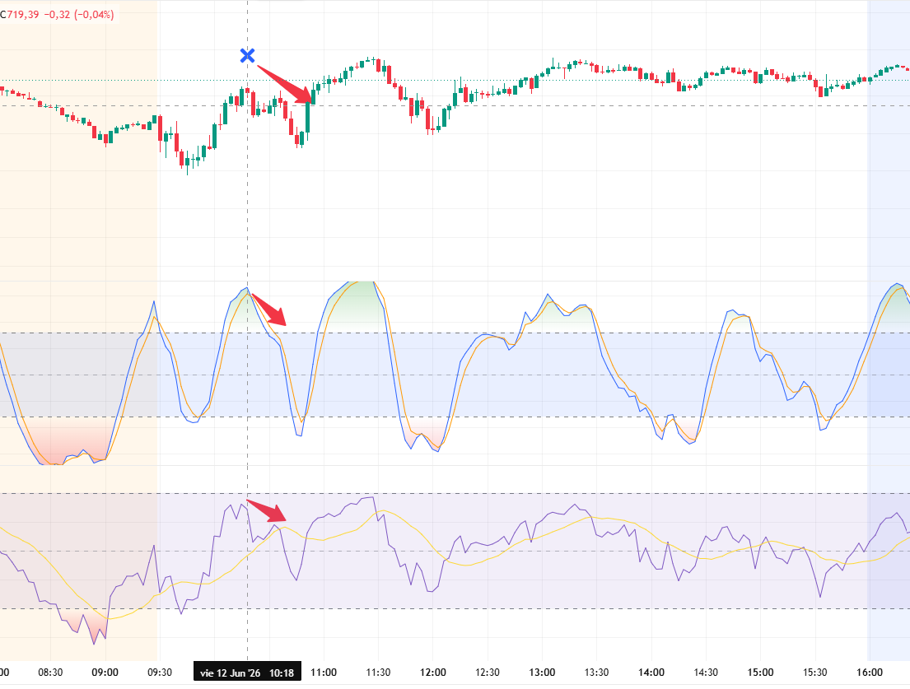
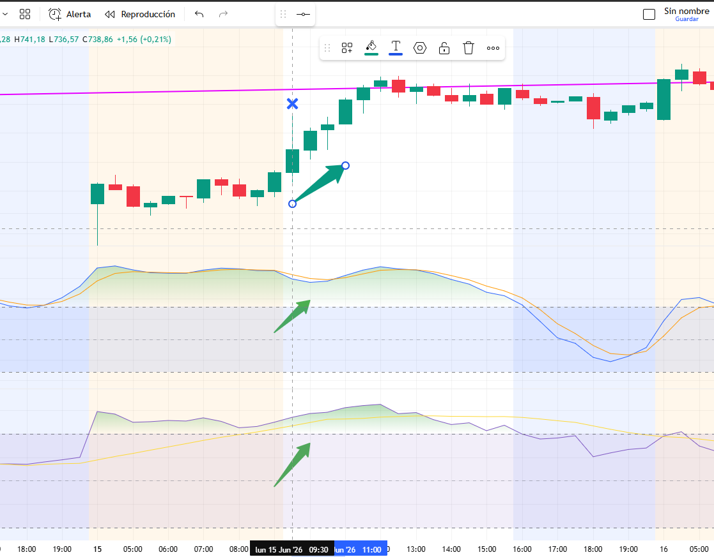
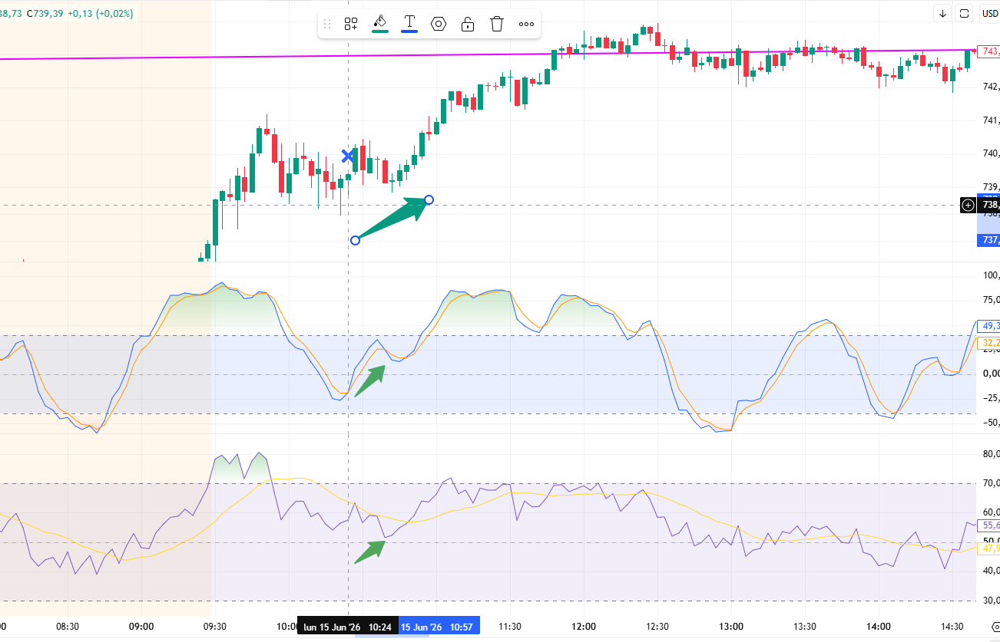
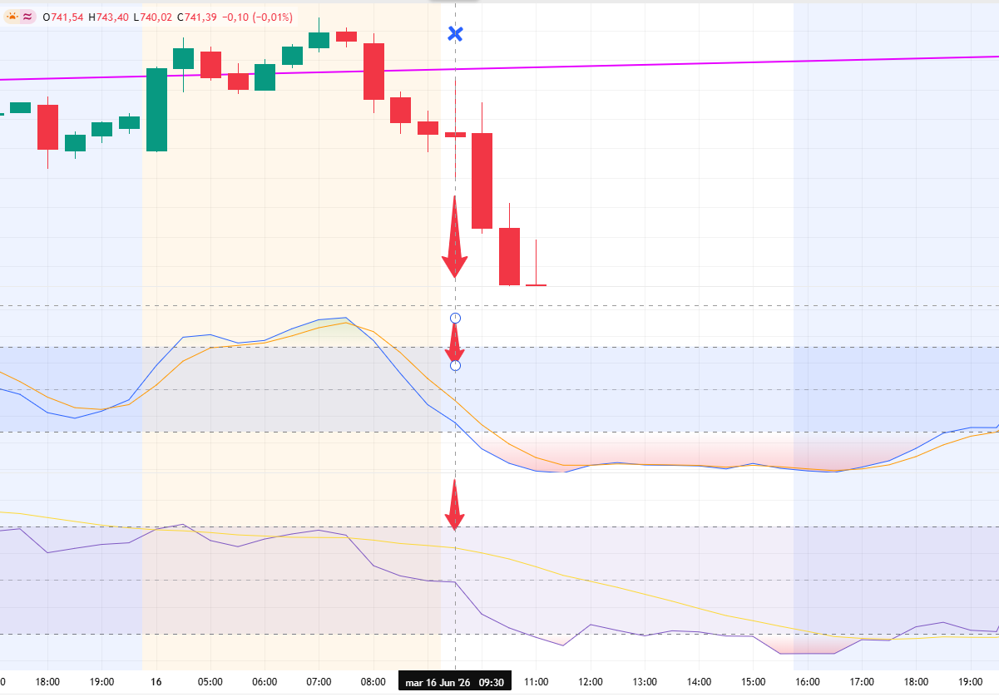
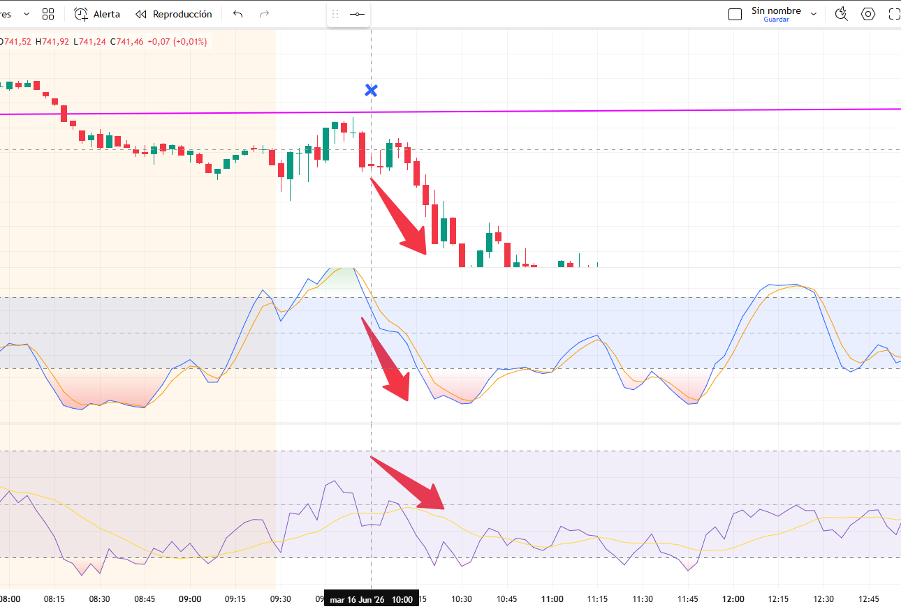

La metodología que presento a continuación es el proceso que sigo antes de abrir una posición, ya sea alcista (CALL) o bajista (PUT). Habitualmente opero contratos de opciones 0DTE (cero días al vencimiento), seleccionando la primera opción cuyo precio de ejercicio se encuentra inmediatamente por debajo del precio del ETF.
Es importante aclarar que este procedimiento corresponde únicamente a mi forma personal de operar. No constituye una estrategia definitiva ni una recomendación de inversión. Lo comparto con fines educativos porque, a lo largo del tiempo, me ha resultado un enfoque sencillo, cómodo de interpretar e interesante de aplicar. Como cualquier metodología basada en análisis técnico, puede generar señales equivocadas y nunca garantiza resultados futuros.
Los 2 tipos de contratos
Los contratos de opciones son instrumentos financieros que otorgan a su comprador el derecho, pero no la obligación, de comprar o vender un activo a un precio determinado antes de una fecha de vencimiento. A cambio de este derecho, el comprador paga una prima al vendedor del contrato. Las opciones se utilizan tanto para invertir y especular sobre el movimiento de los precios como para proteger inversiones frente a posibles pérdidas.
Un contrato CALL otorga al comprador el derecho de comprar un activo a un precio previamente establecido (precio de ejercicio o strike). Generalmente se adquiere cuando se espera que el precio del activo aumente, ya que si el mercado sube por encima del precio de ejercicio, el comprador puede obtener una ganancia al comprar más barato de lo que vale en el mercado. Si el precio no aumenta como se esperaba, la pérdida máxima para el comprador se limita a la prima pagada por el contrato.
Un contrato PUT otorga al comprador el derecho de vender un activo a un precio previamente establecido. Normalmente se compra cuando se espera que el precio del activo disminuya, pues si el mercado cae por debajo del precio de ejercicio, el comprador puede vender a un precio más alto que el del mercado, obteniendo un beneficio. Si el precio no baja, el comprador puede dejar vencer la opción, perdiendo únicamente la prima pagada.
Los indicadores
Para tomar decisiones utilizo únicamente dos indicadores: el Relative Strength Index (RSI) y el Stochastic Momentum Index (SMI).
El RSI (Relative Strength Index) mide la fortaleza del movimiento del precio en una escala de 0 a 100. Tradicionalmente, valores superiores a 70 indican una posible condición de sobrecompra, mientras que valores inferiores a 30 sugieren una posible sobreventa. Además, un RSI por encima de 50 suele reflejar predominio del impulso alcista, mientras que por debajo de 50 indica predominio del impulso bajista. Por ello, resulta útil para evaluar qué lado del mercado —compradores o vendedores— mantiene el control.
Por su parte, el SMI (Stochastic Momentum Index) mide el impulso del precio respecto a su rango reciente. Una de sus principales ventajas es que suele reaccionar antes que otros indicadores de momentum, permitiendo detectar posibles cambios de dirección con cierta anticipación. Asimismo, los cruces entre su línea principal y su línea de señal pueden utilizarse como confirmación para identificar posibles puntos de entrada o salida.
No recuerdo si estas configuraciones fueron modificadas por mí o corresponden a los valores predeterminados de la plataforma. En cualquier caso, los parámetros específicos son menos importantes que comprender la información que ambos indicadores proporcionan cuando se analizan de manera conjunta.
Estas son las configuraciones que utilizo.
Configuración del SMI

Configuración del RSI

Análisis de la apertura (9:30 AM)
Para ilustrar este procedimiento utilizaré como ejemplo varias sesiones del ETF QQQ, comprendidas entre el 11 de junio de 2026 y el 16 de junio de 2026.
Cada mañana sigo una secuencia de análisis muy simple:
- Verificar si existe alguna noticia extraordinaria con potencial de mover el mercado. En mi caso, suelo prestar especial atención a declaraciones de Donald Trump u otros acontecimientos relevantes, ya que pueden invalidar cualquier análisis técnico.
- Analizar el gráfico de 30 minutos para identificar el posible sesgo direccional de la sesión.
- Confirmar que tanto el RSI como el SMI apunten hacia la misma dirección. Cuando ambos indicadores coinciden, considero que existe una mayor probabilidad de que el movimiento continúe.
- Finalmente, descender al gráfico de 3 minutos, donde busco el momento más adecuado para ejecutar la entrada. Esta temporalidad también permite detectar pequeñas reversiones o cambios de estructura que pueden mejorar el punto de entrada.
Jueves 11/06/2026

En esta sesión se observa una aparente contradicción: el precio cerró al alza, pero tanto el RSI como el SMI muestran una pérdida de impulso y sugieren un posible movimiento bajista. Cuando ambos indicadores coinciden de esta manera, comienzo a buscar oportunidades para abrir una posición en PUT.
Para definir la entrada descendemos al gráfico de 3 minutos.

Aproximadamente seis minutos después de la apertura aparece una señal que considero válida. Personalmente utilizo el cruce del SMI como principal detonante para ejecutar la operación, por lo que la posición se abre mediante contratos PUT.
El movimiento posterior fue suficiente para alcanzar el objetivo. Mi meta habitual consiste en obtener un desplazamiento aproximado de 2 dólares a favor del contrato, lo que normalmente representa una ganancia cercana a 60 dólares, dependiendo del contrato seleccionado.
Con el paso del tiempo he aprendido que uno de los mayores enemigos de una buena operación es la ambición. En la mayoría de los casos prefiero asegurar una ganancia pequeña y consistente antes que intentar capturar todo el recorrido del mercado.
Viernes 12/06/2026

En esta sesión el gráfico de 30 minutos presenta inicialmente un sesgo bajista, lo que podría sugerir una operación mediante PUT. Sin embargo, el análisis de la temporalidad superior únicamente proporciona un contexto; la entrada siempre debe confirmarse en el gráfico de 3 minutos.

La confirmación apareció aproximadamente dieciocho minutos después de la apertura. Este ejemplo demuestra la importancia de la paciencia: el mercado necesita tiempo para alinearse con el escenario planteado por el análisis de la temporalidad superior.
La entrada se produjo cerca de los 719.50, alcanzando el objetivo de aproximadamente 2 dólares sobre el contrato durante la siguiente vela de tres minutos.
Este tipo de operaciones suele durar pocos minutos. Por ello resulta fundamental monitorear el precio directamente desde el bróker donde se ejecutan las órdenes. En mi caso utilizo Webull, ya que me permite seguir el movimiento del contrato prácticamente en tiempo real.
Lunes 15/06/2026

Después del fin de semana el mercado abrió con un fuerte impulso alcista, situándose en una condición cercana a la sobrecompra. Este tipo de movimientos puede estar provocado por múltiples factores: noticias políticas, acontecimientos geopolíticos, datos macroeconómicos o simplemente un cambio en el sentimiento del mercado.
En cualquier caso, tanto el RSI como el SMI mostraban un sesgo claramente alcista, por lo que el escenario favorecía la compra de contratos CALL.

La confirmación apareció aproximadamente veinticuatro minutos después de la apertura.
Como regla general, tomo beneficios cuando el contrato avanza alrededor de 2 dólares. No obstante, si observo una desaceleración del impulso o señales de agotamiento, prefiero cerrar anticipadamente con una ganancia cercana a 1 dólar antes que arriesgar una reversión completa del movimiento.
Martes 16/06/2026

En esta ocasión el mercado venía de un movimiento alcista muy pronunciado. Tanto el RSI como el SMI comenzaron a mostrar señales de agotamiento, lo que aumentó la probabilidad de una corrección bajista y me llevó a considerar una posición mediante PUT.

La señal de entrada apareció al finalizar la vela de las 10:00 a. m.. A partir de ese momento únicamente fue necesario esperar a que el precio desarrollara el movimiento esperado hasta alcanzar el objetivo establecido.
Un operador con mayor experiencia podría permitir que la posición continúe si el impulso permanece intacto. Sin embargo, considero que los principiantes deberían limitarse a asegurar ganancias modestas y evitar prolongar innecesariamente las operaciones. De hecho, antes de operar opciones es recomendable comprender plenamente los riesgos que implican estos instrumentos, ya que es posible perder dinero con rapidez.
Los ejemplos anteriores muestran que identificar una entrada suele ser relativamente sencillo cuando existe alineación entre el RSI y el SMI. La parte verdaderamente compleja consiste en gestionar la salida de la operación y controlar las emociones durante el proceso.
Finalmente, conviene reiterar que esta metodología no pretende ser una estrategia infalible ni un sistema capaz de predecir el mercado. Es simplemente la forma en que personalmente analizo y ejecuto mis operaciones. Puede funcionar en determinados contextos y fallar en otros, por lo que cada lector debe realizar su propio análisis y comprender plenamente los riesgos antes de operar productos financieros.